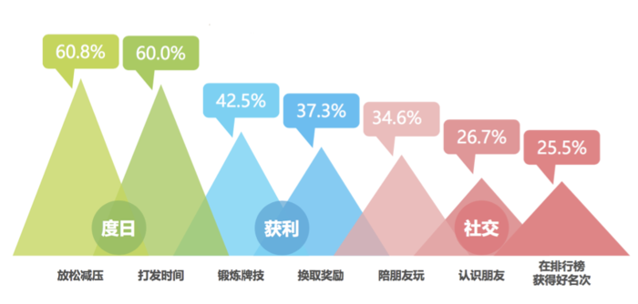
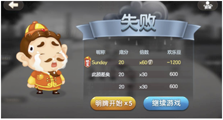
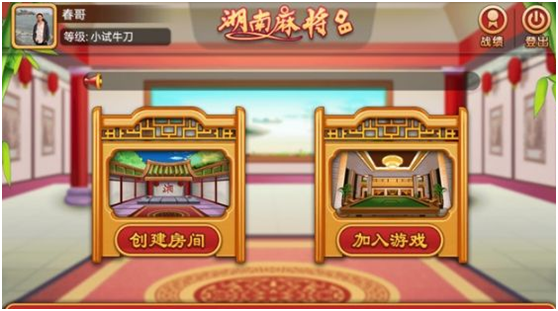
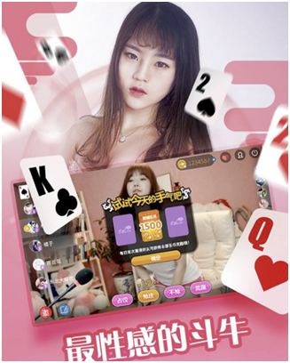

1998年鲍岳桥创立联众将围棋带到线上，棋牌行业发展至今已走过近19年的历程，2017年的棋牌市场迎来再次大爆发，特别是在地方棋牌方面，大量的资本、创业者快速进入。而这得益于闲徕互娱推出的棋牌游戏“新模式”房卡，让这个有点神秘的棋牌市场有了更多元化的发展。
一、棋牌游戏的发展史
混沌初开
国内最早将棋牌游戏带来线上的当属联众，出于对围棋的爱好，1998年，鲍岳桥开启了中国棋牌游戏之路。同时期冒出一波吃螃蟹的人：1998年游戏茶苑，1999年3月中国游戏中心，2000年3月边锋棋牌纷纷进入人们视野。
03年8月，腾讯推出QQ游戏平台，腾讯强大的渠道资源，瞬息抢夺了大量的流量，这让同时期的棋牌弄潮儿们感到非常大的压力。
这一时期行业有着非常典型的特质：创始人都是棋牌爱好者，并没有清晰的商业思路。
群分天下
随着腾讯棋牌的成功，越来越多的人想分一杯羹，在这个时期又进入了第二个发展的契机，集大成者当属同城游。同城游找到了夹缝中的定位——专注三四线城市的地方性棋牌游戏市场。
这一时期行业的特质：全国性市场变为红海，地方棋牌竞相绽放。
百家争鸣
2008年前后棋牌游戏行业进入又一繁荣时期，可谓百家争鸣，各种平台前赴后继，往更垂直领域细分。
与视频结合： “面对面视频游戏世界”，为玩家提供了太多了遐想。
与比赛结合：2007年，JJ比赛横空出世，开启棋牌竞技比赛模式。
与社交结合：2008年，博雅互动靠着社交平台的德州扑克和斗地主。
与游戏结合：2009年2月，老K棋牌成立关注捕鱼游戏。
这一时期行业的特质：“多元化”、“垂直化”。
枭雄出世
2016年，当大家觉得棋牌市场已经成型时，一匹黑马又横空搅局，闲徕推出“房卡”模式，致力于熟人间线上约局。这一时期行业的特质：房卡私密开局，线下关系转移线上。
二、怎样的一群人在游戏

可以清晰的看出，棋牌游戏玩家核心需求还是休闲娱乐。但是棋牌游戏天生带着竞技的属性，怎么在休闲和竞技中平台是所有棋牌游戏必须考虑的问题。因为大部分的竞技总会带着负面的情绪，照顾好失利者的心态，才能让游戏可持续的发展下去。
与大多数网游最大的差异点在于“获利”，这是其他游戏不能带给玩家的体验。所以对很多玩家来说，在棋牌游戏中不断的获得“虚拟货币”也是一大乐趣。由于政策限制，游戏不能提供将“虚拟货币”提现的功能，此块游戏方一定不能触碰红线。
设备环境
由于棋牌游戏本身特殊性，相对传统网络游戏更加的“轻度”，用户的使用环境也会有所不同。
A、非WIFI网络用户多：常规的棋牌游戏在流量消耗以及对网络环境的要求比较低，且碎片化场景更多，也是促使棋牌游戏在网络环境上大多数用户依然是非WIFI；所以在产品设计上要尽量考虑到流量消耗方面，有大消耗比如视频等玩法的时候要提醒用户使用WIFI；
B、低端机多：棋牌游戏的简单的画面，所以对低端机也有天生的友好；
C、年龄层偏上，男性用户为主；
D、地域性强，主要分布在四川、重庆、江苏以及沿海城市。
三、棋牌种类缩影
线上棋牌游戏是传统棋牌游戏的延续，两者在核心玩法上并无本质的差别。棋牌顾名思义，可分为：棋、牌、麻将三大类，广义上传统的纸牌、棋类、麻将以及桌游、捕鱼、老虎机、骰子都归属于棋牌游戏。
从棋牌项目对身心作用的强弱程度分类，还可分为简单棋牌游戏和复杂棋牌游戏。简单棋牌类一般不伴有很复杂的心智活动，消遣性强，游戏作用大于思维活动，令人轻松。如儿童喜爱的跳棋、斗兽棋，青少年喜爱的军旗等。复杂棋牌一般都伴有较为复杂和强烈的心智活动，思维活动大于游戏作用，并具有较强的竞赛性，如围棋、中国象棋和国际象棋等。
国内用户对斗地主、麻将、扑克类接受程度最高，几乎占据了70%的牌类游戏。
斗地主：基础类扑克游戏，玩法简单，娱乐性强，老少皆宜。该游戏由三个人玩，用一副牌，共54张，每局牌有一个玩家是“地主”，地主为一方，其余两家农民为一方，双方对战，先出完牌的人所代表的一方获胜。因为每一局“地主”、“农民”都会有变化，所以对抗性和配合性都很强。
麻将类：麻将游戏其历史可追溯到三四千年前。麻将的游戏人数为4人，分别为东、南、西、北，其中一家为庄家，其余为旁家。没人手里抓13张牌，通过吃牌、碰牌、杠牌等方式，使手牌按照相关规定的牌型条件和牌，先和牌者胜出。
扑克类：扑克的起源众说纷纭，但它却是流行于全世界的一种娱乐游戏。玩法多种多样，休闲娱乐，精彩刺激。 至尊五张不仅需要技巧更靠运气，可谓是现实人生的缩影。 德州扑克被称为是“学一时，精一世”的经典扑克游戏。 十三支，在理牌的过程中不但充满乐趣，也是对玩家理牌技术和实力的考验。
国内由于扑克、麻将各地习惯不同，所以在各地也衍生出大量的细分类型，这使得棋牌的地域性很强，例如广东人玩四川麻将是需要一定时间适应的。
四、小赚一笔
虚拟货币
该模式为绝大多数游戏产品的盈利来源，虽然棋牌游戏的付费点不会特别多，但是本身的竞技性质会让虚拟货币的流通非常频繁。金币的消耗根据玩法规则、倍数的不同，各类游戏差异较大，下图为斗地主的结算界面：

皮肤道具
根据游戏类型提供对应的工具也是一种售卖方式，例如斗地主的加倍工具，游戏皮肤等。不过工具不能太影响公平性，所以这块的需求也会比较小众。
房卡模式
房卡模式，是16年衍生出的玩法，玩家可以创建高级房间（收费），高级房间有一定的特权，部分游戏还支持用户房间租用收费，这给房主带来一定的利益，也促使他们花钱创建房间。

比赛
游戏中设置的金币赛、排位赛等机制，也会加速玩家在游戏中金币的消耗。
五、数据好才是真的好
需要关注的数据大都分为几大类：用户、在线、充值、市场等。
用户
主要关注：注册量、DAU、新增、设备数、留存。DAU及流程的高低间接反映着产品的好坏、
用户的喜欢程度。
行业均值：次留35%，七留12%。
在线
主要关注：同时在线、在线时长、启动次数。
行业均值：在线为15min，日均启动次数为2.7。
充值
主要关注：充值总额、人数、arpu、付费率、复购率。
行业均值：付费率5%。
六、不能触碰的红线
棋牌游戏最大的风险在于“涉赌”，很容易被“有心人”用来作为赌博的工具，所以开发者必须了解相关法律法规，规避风险才能长远发展。整理了常见相关政策要求，供参考：
1．禁止资金双向流动；禁止接受投注的、提供给他人组织赌博、参与赌博网站利润分成。
2．不得在用户直接投入现金或虚拟币前提下采取抽签、押宝、随机收取等偶然方式分配游戏道具或者虚拟货币；不得以偶然方式获得金币；不得提供用户间赠予转让游戏积分等转账服务。
3．网络游戏经营单位不得收取或以“虚拟货币”等方式变相收取与游戏输赢相关的佣金。
再看看规避政策：
玩家输赢的都是虚拟的无价值的数值，不能界定为“财物输赢”，则不涉及赌博。
不以营利为目的，进行带有少量财物输赢的娱乐活动，以及提供棋牌室等娱乐场所只收取正常的场所和服务费用的经营行为等，不以赌博论处；游戏中进行财富输赢必须设置上限。
3．提供游戏服务，允许收取费用。在收取费用的方式上不能采用类似赌场抽水的方式，从赢家赢取的额度中按照比例抽水。而应该采用与玩家输赢没有必然关系的收取方式。
七、做棋牌还有哪些切入点
社交化
从“陌生人局”到“熟人局”，“房卡”模式引爆新蓝海。如果说棋牌游戏的1.0时代是大家凑在一起玩游戏，2.0时代是将游戏进化成比赛，升级到棋牌文化，那么“房卡”模式的出现，则让棋牌游戏行业进入到3.0时代。
传统的棋牌游戏集中在陌生人游戏，随着全民社交的兴起，从陌生人到网友，从线下好友到线上牌友，熟人局或越来越成为棋牌游戏的重心。与线下棋牌室模式类似，用户的增长是传导式的，粘度高，需要的推广也比较少，可以小团队快速推进的方式抢占市场。
可以尝试熟人组局、陌生人沉淀关系，有了关系链才有高留存高活跃，俘获情感才能俘获钱包。
地方化、竞技化
从大众娱乐到竞技体育，从棋牌游戏到智力运动。棋牌游戏本身是智运会的比赛项目，体育总局棋牌运动管理中心曾发起网络棋牌大赛，包括围棋、象棋、斗地主等项目，同时有WPT、CPT、WSOP等大型商业赛，还有各地的麻将锦标赛、世界麻将大赛等。对于游戏厂商来说，线上海选、线下比赛，线上线下结合提高用户参与度，利于增加用户渗透率，扩大用户量和提高用户活跃。
泛娱乐化
移动端直播的兴起跟棋牌视频也带来新的思路，虽然与视频结合不算创新玩法，不过相信跟美女、送礼结合，会给打牌带来不一样的体验。

八、结语
风险与收益并存是棋牌行业最大的特性，目前市面上各大棋牌公司竞相绽放，已成红海，是不是已经没有蛋糕可分。其实不然，只要能想出更好的点子，用户是一定会买单的。
优势：相对其他游戏，棋牌游戏有着天生的优势：门槛低、盈利快、用户终生价值高；且用户高留存、高忠诚、高在线时长。玩法相对固定，一旦游戏体验能够满足用户的诉求，用户再尝试或迁移到其他同类产品的动力会非常小。这对入行搅局的人来说可能不一定是好事。
劣势：地域性强，棋牌游戏是线上游戏中唯一具有地方特色属性的游戏类型，熟悉的规则是吸引地方特色棋牌游戏用户的主要因素之一。
机会：国家对电竞行业的认可，给电子竞技带来许多想象空间，让更多人了解和接受游戏。棋牌本身就带有竞技性，从电子竞技方向去扩展相信会有一片新的天地。政策支持：良性的棋牌竞技是政府认可支持的，也是精神文明。
威胁：行业的风险主要来自跟线上赌博暧昧的界限。不过只要秉着正义之心做产品做游戏，又何来风险一说。纹桃科技致力于棋牌游戏开发14年，拥有大量棋牌游戏开发运营经验和大批成功案例。
想开发一款迅速盈利的棋牌游戏，欢迎咨询热线电话：18711739336


游戏产品
PRODUCTS

售后服务
SERVICE

技术支持
TECHNOLOGY

运营指导
OPERATING